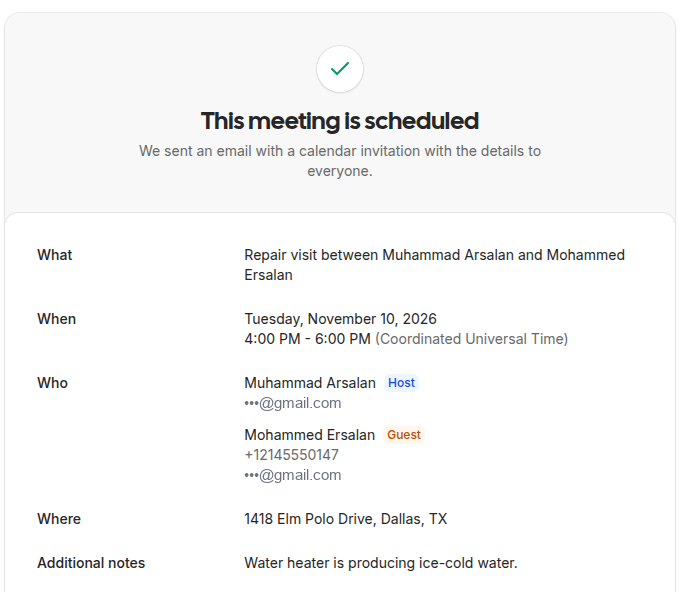
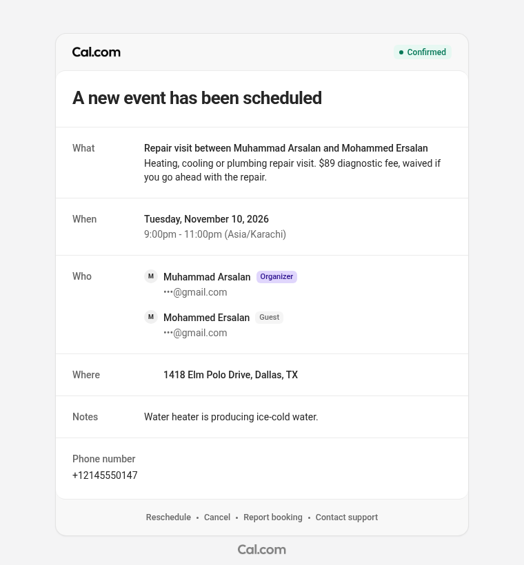

The audio is the call recording from Vapi, not re-voiced. Captions are Vapi's own transcript, so they keep its small mishearings.
The result, outside the call
The booking appeared on Cal.com during the call, and Cal.com sent its confirmation email seconds later. Email addresses are masked.


The whole call, with the backend's side
Every line Ava and the caller said, and each tool call the agent made to the backend, at the moment it happened.
- Ava
Thanks for calling Brightline Heating and Plumbing. This is Eva. Are you calling about an emergency, or how can I help today?
- Caller
I have a My heater is not working. And I want someone to have a look.
- Ava
I'm sorry your heater isn't working. Is there any gas smell or is there no heat at all right now?
- Caller
Uh, no gas smells.
- Ava
Thanks for checking. Is it a heating problem with your furnace or is it a water heater that isn't working?
- Caller
Ice water heater
- Ava
Got it. A water heater that's making ice cold water. Let me check the earliest openings for a repair visit. Do you prefer a morning or an afternoon?
- Caller
I prefer morning. But is there
- Ava
Let me pull up the schedule. Sorry. I didn't catch the end of that.
- tool
check_availabilitycalled - Ava
Did you wanna know whether
- result
Cal.com returned open slots: Tuesday Nov 10 at 8:00 AM, Tuesday Nov 10 at 10:00 AM, Wednesday Nov 11 at 8:00 AM, Wednesday Nov 11 at 10:00 AM
- Caller
is there is there a charge for the visit?
- Ava
Yes. There's an 89 dollars diagnostic fee for the visit and it's waived if you go ahead with the repair. Would you like Tuesday at 8 am or Tuesday at 10 am?
- Caller
Tuesday, 10 AM works for me.
- Ava
Great. I'll need your full name first.
- Caller
My name is.
- Ava
Sorry, I didn't catch your name. Could you say your full name again?
- Ava
Thanks, Mohammed. What's your last name?
- Caller
Ersalan.
- Ava
Thanks. What's the service address including the unit number if there is 1?
- Caller
It's 1 4 1 8 e l m Polo Drive, Dallas 7 5 2 0 1.
- Ava
Thanks. Let me make sure I have that right. 14 18 Elm Polo Drive, Dallas, zip 7 5 2 0 1. Is that correct? And is there a unit number?
- Caller
Yeah. That's correct. No unit number.
- Ava
Thank you. I use the number you're calling from as the callback number?
- Caller
No.
- Ava
Okay. What's the best
- Caller
Take my other number.
- Ava
Sure. What's the other number? Please say the area code first then the digits and groups.
- Caller
2 1 4 5 5 5 0 1 4 7
- Ava
Got it. That's 2 14 5 55 0 1 47 ending in o 1 47. Let me read the details back. Repair visit on Tuesday, November tenth at 10 AM at 14 18 Elm Polo Drive, Dallas 7 5 2 0 1 for Mohammad Ersalan. Is that right?
- Caller
Perfect. Yeah. That's right.
- Ava
Booking that for you now. Booking that for you now.
- tool
book_appointmentcalled - result
First attempt timed out in the development tunnel. Vapi retried; nothing was booked twice.
- tool
book_appointmentcalled - Ava
You're booked for Tuesday, November tenth at 10 AM. Your confirmation code is b l
- result
Booked on Cal.com and in Postgres. Code BLP7DE, Tuesday Nov 10 at 10:00 AM, SMS confirmation queued.
- Ava
p 7 d e. The technician will arrive within a 2 hour window and a text confirmation is on its way. Is there anything else I can help with?
- Caller
Uh, no. Thanks, Eva.
- Ava
Thanks for calling Brightline Heating and Plumbing. Have a great day.
How a call flows
Vapi handles the phone line, speech and voice. The backend owns every decision that touches data.
What it handles
One agent covers the calls a home-services front desk gets all day.
- Bookings, reschedules and cancellations: real open times only, details read back before booking, and cancellation needs the code plus the last 4 digits of the phone.
- Questions: answered only from an approved list. She says she doesn't know rather than guess a price or policy.
- Emergencies (gas, CO, flooding, no heat for vulnerable people): logged first, a one-line safety instruction, an SMS page and a warm transfer to the on-call technician.
- Job applicants: role, experience, licences and availability saved for the office, without asking about protected characteristics.
Built to survive real calls
The parts that usually break in production are tested.
- No double-booking: the capacity check and the insert run in one transaction under a Postgres lock. A test sends four bookings at once at a slot with room for two.
- Retries are safe: Vapi retries a slow tool call. Results are stored by tool-call ID, so a retry can't book or text twice.
- A failure never drops a call: tool errors come back as instructions the agent can act on, and a failed SMS is logged while the call goes on.
- One source of truth: prices, hours, ZIP codes and roles live in one business profile that both the prompt and the tools read, with a test keeping them in sync.
- Call simulator: Claude plays scripted callers (bookings, a gas leak, a prompt-injection attempt) against the real prompt and tools, and each call is graded on its side effects and a rubric.
Honest note: this call ran through a free development tunnel, which dropped the first booking request. Vapi retried and the booking went through once. In production the backend runs on a server with a fixed HTTPS address.